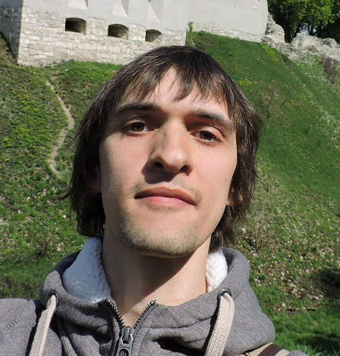

Коротко о себе
Привет, меня зовут Сергей, и я хочу немного рассказать о себе. Ну что, погнали ... На данный момент мне 27 лет, я проживаю в городе Киеве, чему очень-очень рад, так как люблю свой родной город. В детстве я очень увлекался футболом, и мне казалось что моя судьба уже предопределена - я буду футболистом, так я всем тогда говорил. Но у жизни на меня были свои планы... В 13 лет я получил небольшую травму, из-за которой мне сказали что профессионально играть в футбол мне нельзя и мне пришлось решать кем же я стану теперь. Таким образом после 9-го класса я ухожу из школы и поступаю в Киевский Индустриальный техникум на специальность биржевая деятельность(выпустился я с колледжа со специальностью маркетолог, аккредитация это мощь:)). После колледжа я поступаю на второй курс Киевского Национального Экономического Университета им. Вадима Гетьмана (КНЕУ) на специальность маркетинг, где если можно так сказать "успешно учусь"(был твердым хорошистом) 3 года и получаю бакалавра. Забыл написать, что начиная с 4-го курса университета я работал вводящим данных(вводил анкеты) в международной исследовательской компании "ГФК-Юкрейн", куда и пришел работать на постоянной основе после окончания 4-го курса университета, но уже на должность менеджера обработки данных. В период с 2012 по 2013 год я заочно учась получаю полное высшее образование по специальности маркетинг. На данный момент я уже 7 лет работаю в компании "ГФК-Юкрейн". За время работы в компании я набрался колосального опыта в работе с данными, их анализом и построением разного рода отчетов. С февраля 2018 года я пошел на курсы front-end разработчика, так как мне захотелось что-то поменять в своей жизни. Увидим, что из этого выйдет, мне аж самому интересно :). Не переключайтесь, далее будет...
Мои увлечения
Увлечения, их есть у меня...- Увлекаюсь Античной историей, а именно историей Древней Греции, Древнего Рима, Римской империи. Также люблю читать книги о стратегиях ведения войны в античности("Записки о Гальской Войне", "Походы Александра Македонского")
- Занимаюсь судомоделированием, сейчас на стапеле у меня стоит 3 модели кораблей "Виктори", "12 Апостолов", "Сан Джованни Батиста"
- Люблю слушать современную электронную музыку в стиле Trance, House, Deep House.
- Также очень люблю пешие прогулки по Киеву, которые помогают расслабится и получить кучу позитивных эмоций.
- Ну и как же без футбола, люблю ходить на стадион любимой команды - "Динамо Киев". Бело-синий самый сильный!!!